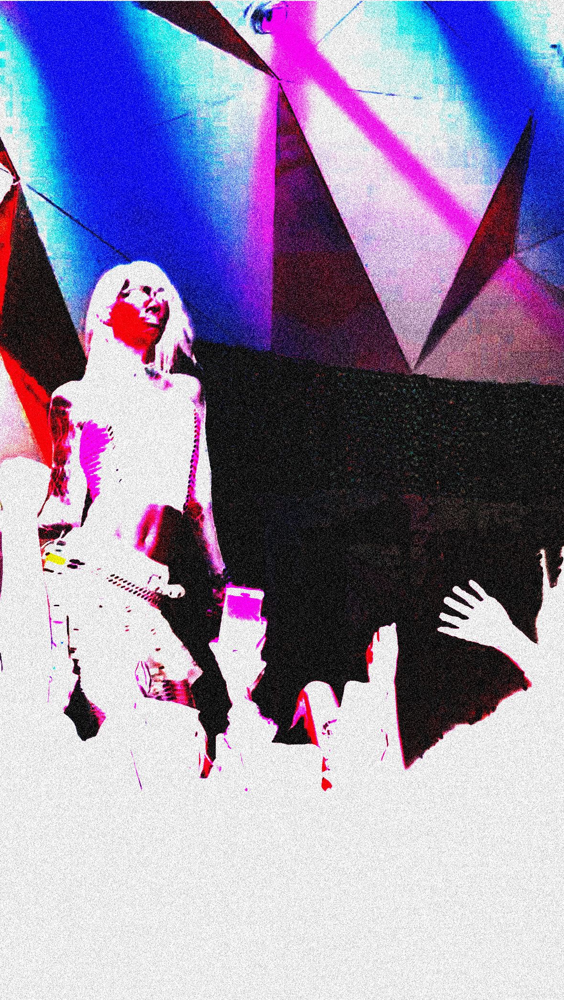

The reason this concert is included as an entry, is because of how different it was as a sensory experience compared to the Conan Gray concert. While both are concerts for “pop artists”, an arena concert is different with thousands of seats than a hall which is mostly standing.
The concert took place in Brooklyn, at Elsewhere (the hall). I had been here once, earlier this year. I had seen the electronic duo Frost Children. I had an idea of how large the space was, and how intimate it felt. This concert space typically features electronic musicians. It can be overstimulating because of how close you are to other people, shoulder to shoulder. Picture rave culture. Prior to last year, I hadn’t been to many concerts. I distinctly remember being at the Frost Children Concert and being pushed and shoved as I stood close to the stage. It was the most “aggressive” concert I’d attended, with people being carried onto the stage and jumping into the crowd. The crowd opened a mosh pit as well. This chaotic scene is definitely something I had to adjust to as I attended more concerts after. Knowing this and being to Elsewhere prior, I had more knowledge going to the 6arelyhuman concert. I didn’t want to stand too close to the stage, but I also didn’t want to be too far. A good in between so I could enjoy the music and have a good view without being pushed around.
I first discovered 6arelyhuman, probably around a year ago. Their song “Hands Up” had gone viral on TikTok, and it was my first introduction to them. I would describe it as a an EDM (Electronic Dance Music) inspired pop song. It’s very reminiscent of 2010s dance pop. Some notable artists that have inspired their sound include Kesha and Lady Gaga. Not only is their music very 2010s pop influenced, but their fashion style is also quite nostalgic of the same era. They’ve taken inspiration from scene, emo, alternative, and the MySpace era. Their style often includes dark tight fit clothing, band tees, skirts, fishnets, boots, converse, bracelets, necklaces. They often wear makeup and colorful wigs which are very drag inspired. I’m very drawn to their artistry, which is very specific and stylized. Their music is so freeing and channels a specific era of dance pop that feels refreshing and modernized at the same. Many of their lyrics reference pop culture, further adding to the nostalgia of the image they’re portraying.
Another reason I was very excited to go to their concert was because of the opening act, who was another similar dance pop artist that I’ve been familiar with. Their name is That Kid. That Kid’s music is quite similar, but I’d describe it as further in the y2k and hyperpop direction. I will also say, both artists are likely going to have songs that end up in my top songs of 2024 so I knew I had to attend this concert. I truly enjoy both of their music so much so then both touring together couldn’t have been more perfect. It made the overall concert experience even better, being able to see two artists that I adore.
For the concert itself, I’d arrived early so I wouldn’t miss the opening act. It was relatively easy getting in. Something I did notice is that there were no metal detectors to walk through which took me by surprise because most other venues I’ve been to have them outside, even smaller concerts. The area in Brooklyn is quite secluded and not in a busy area. The line was quite long, wrapping around the building when I arrived. People’s outfits were clearly inspired by the artists. Going into the venue, I showed my ID and ticket on my phone and got in. It was a relatively easy process. The lighting when walking in is dimmed, with colorful lights reminiscent of the concert space. Being quite early, I got a good spot and wasn’t too close to the stage. Eventually more people arrived and That Kid came out to perform. They performed songs off of their recently released album TK Ultra. I can’t say enough how much I love this album and how deserving of recognition it is. The song Dirty Shirley, is a banger and is definitely one of my most streamed songs of the year. He was very good at hyping up the crowd. After his performance, 6arelyhuman came out, who was also great at hyping up the crowd. As the leading act, people were more energetic towards them. It was a very crowded space. I’ve learned to enjoy the atmosphere, even though at times your view can be blocked by the people in front of you throwing their hands in the air. Live music is such a speciality, especially electronic pop as you can feel the synths and 808s as they’re blasted on the speaker. I tend to lose myself to the music and dance as everyone else is around me. Overtime as I’ve been to more concerts, I’ve adapted more to the space and letting loose. Sometimes it can feel awkward to groove in a crowd of people but you truly have to not care what anybody thinks. Everyone is there to see the artist and have enjoy the experience. Going to concerts has truly pushed me out of my comfort zone while becoming one of my favorite things to do ever. The music and artistry inspires me so much. The sensory experience I got from this concert is an experience I will forever cherish and live for. Embrace every little thing. It’s fun! :)